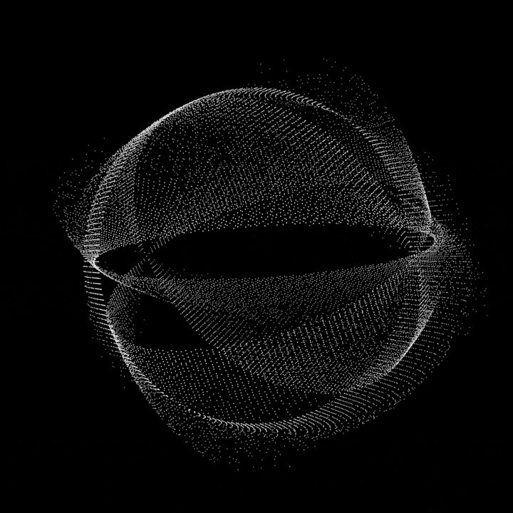
menos
mais
OPERON — Harness Operacional
IA, automações e ferramentas aumentam a potência. O harness organiza contexto, processos, critérios e direção para essa potência virar operação.
Ferramenta é potência. Estrutura é capacidade.
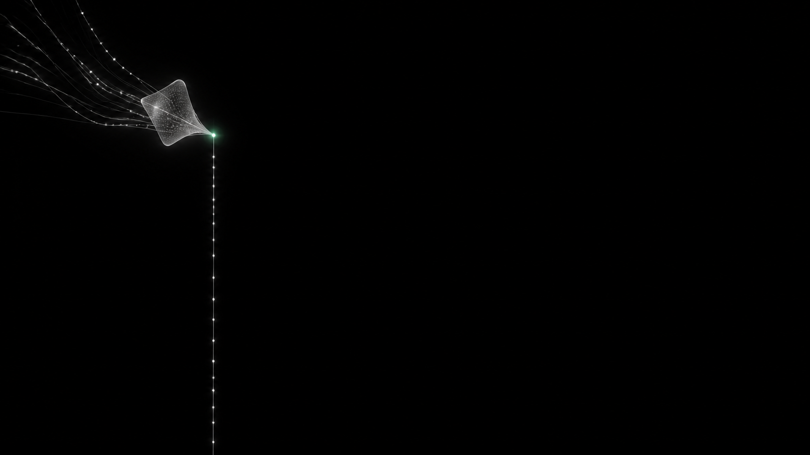
O problema não é falta de esforço. É uma empresa inteira dependendo de contexto, decisões e critérios que ainda vivem em você.
O fundador virou a infraestrutura
Antes da tecnologia
Primeiro entendemos a operação real
Como a OPERON entra
Não automatizamos tarefas isoladas. Construímos capacidade operacional.
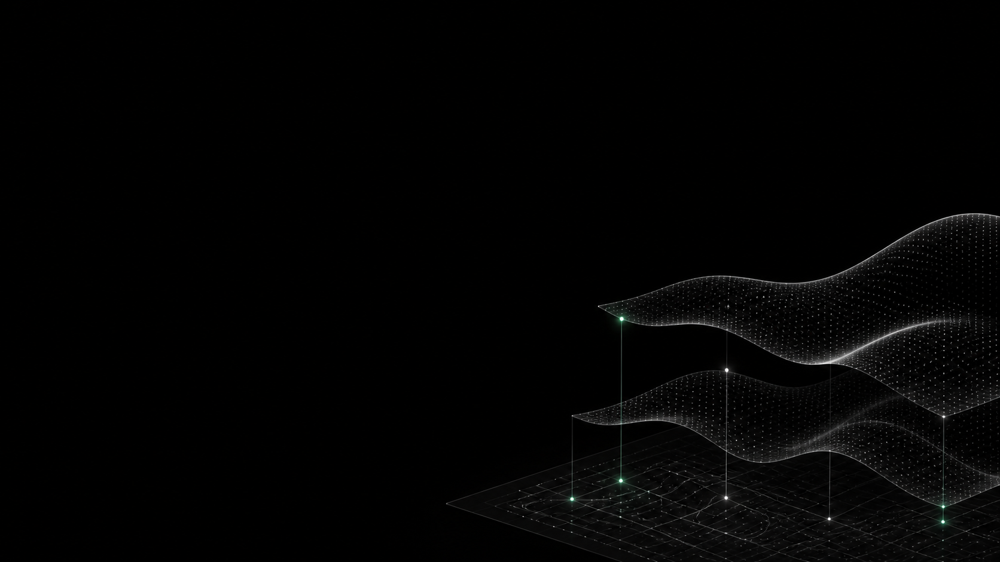
A estrutura que conecta processos, informação, ferramentas e pessoas para a empresa não depender do improviso.
Não é uma automação isolada. É o que faz as partes trabalharem juntas, com direção humana.
A estrutura que faz as partes trabalharem juntas
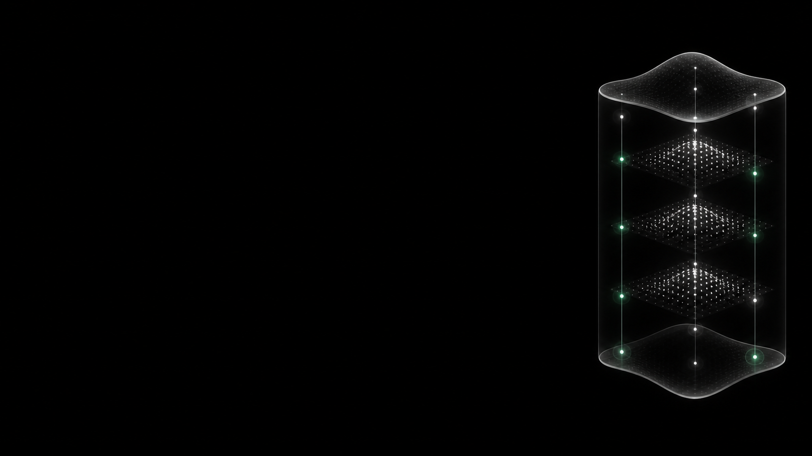
Não é um prompt salvo. É o seu melhor jeito de fazer algo, escrito para ser executado por qualquer pessoa da equipe — ou por um agente.
05 — Skill é capacidade codificada
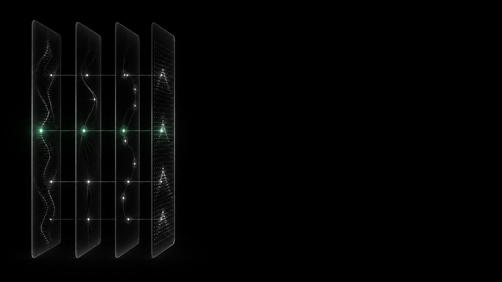
O sinal percorre apenas o caminho autorizado. Onde o risco aparece, a decisão volta para uma pessoa — com o contexto pronto para decidir.
06 — Agentes não são chatbots
Memória também precisa operar.
Decisões, critérios e aprendizados viram memória consultável — não arquivo morto em pasta compartilhada.
07 — O segundo cérebro
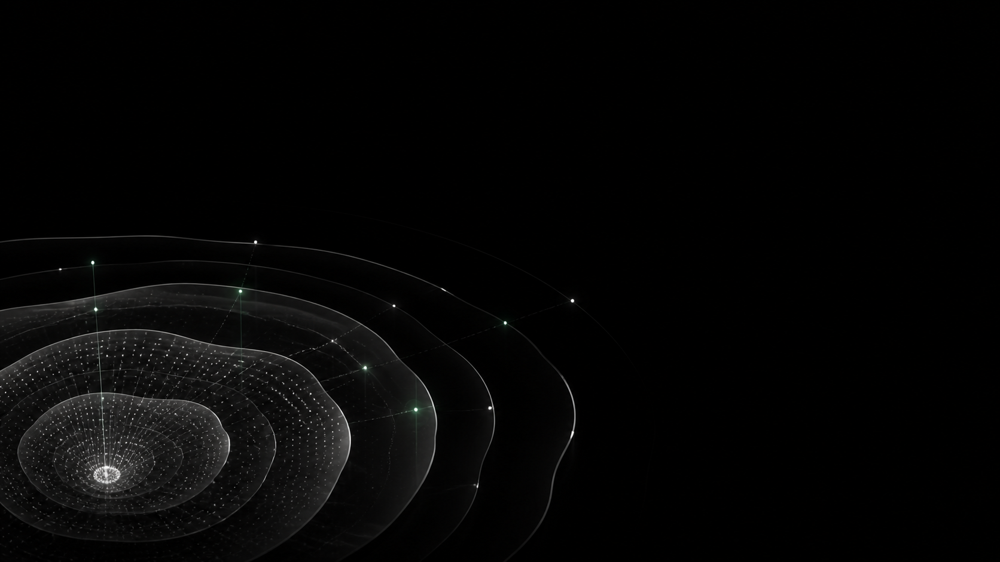
Cada ciclo devolve mais contexto ao sistema. O segundo mês começa de onde o primeiro parou, e não do zero.
08 — Aprendizado que acumula
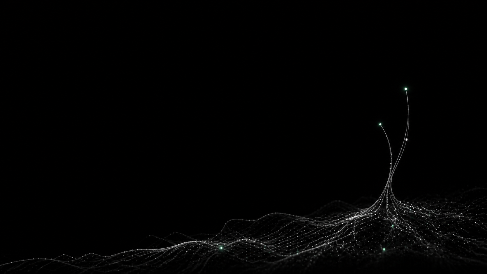
Atendimento, proposta, pesquisa, aprovação: cada etapa passa a ter contexto, critério e rastro — com revisão humana onde a decisão pesa.
12 — O Harness Operacional
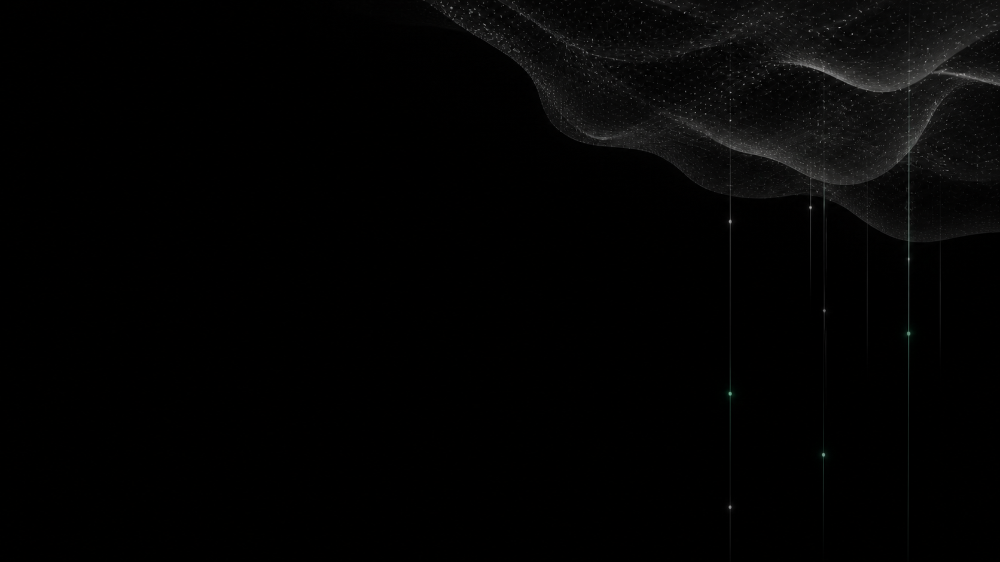
Modelos ficam mais capazes e intercambiáveis. A vantagem migra para quem tem contexto, avaliação, governança e memória.
13 — Por que agora
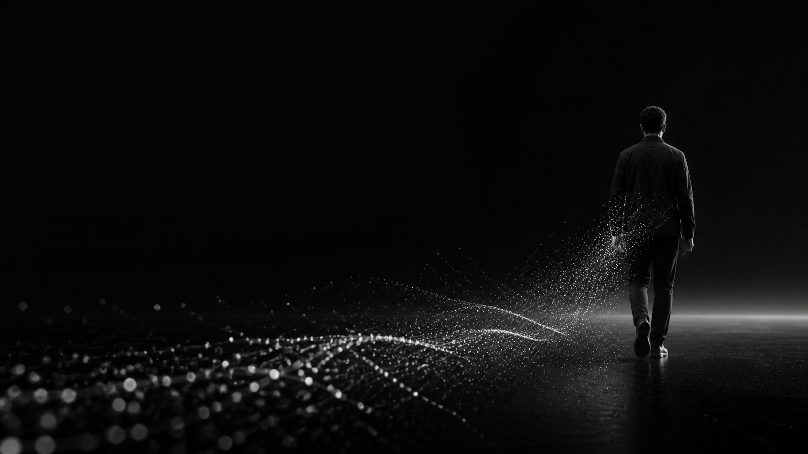
O que a estrutura devolve
Não é liberdade instantânea. É uma empresa criando condições para funcionar sem ocupar tudo o que seu fundador é.
Capacidade recuperada vira escolha
Você continua dando direção, julgamento e responsabilidade. A estrutura deixa de exigir sua presença em cada repasse, busca e decisão recorrente.
Humanos mantêm a direção
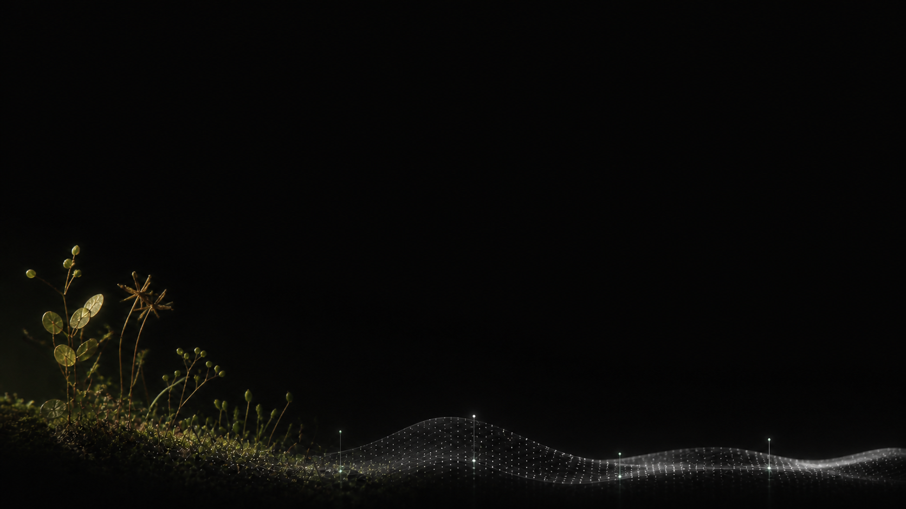
A OPERON constrói a capacidade que falta entre o que a empresa sabe e o que ela consegue fazer, todos os dias.
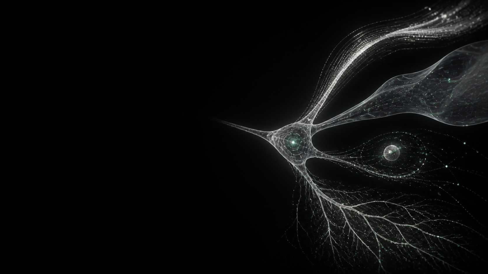
17 — Formas de construir junto
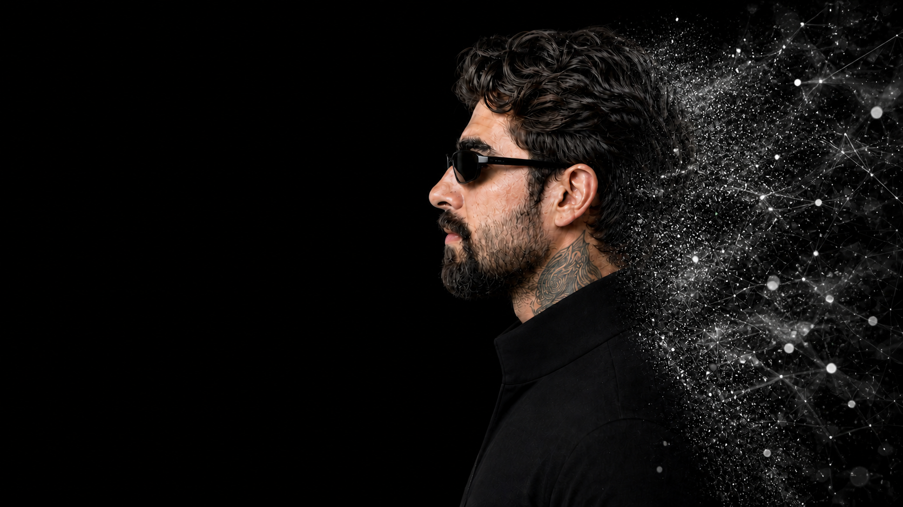
Desenvolvedor e estrategista. Conecta código, inteligência artificial, processos, marketing e linguagem para transformar uma visão em capacidade operacional.
Seu trabalho começa onde a operação trava: desenhar a próxima capacidade da empresa antes que ela precise pedir por ela.
Não basta funcionar. Precisa ser memorável.
Estratégia · tecnologia · expressão
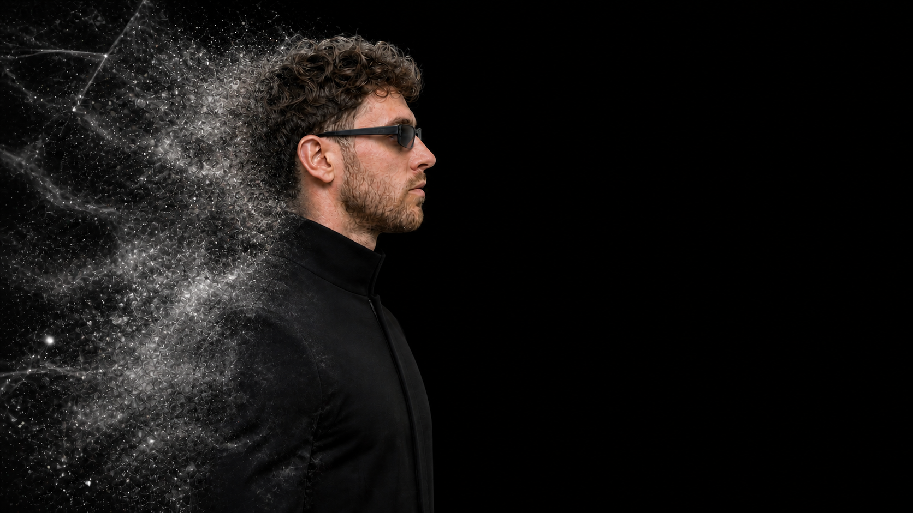
Especialista em relacionamento, lógica e otimização de processos. Enxerga gargalos, organiza caminhos e conecta inteligência artificial à operação para resolver problemas com critério e adaptabilidade.
Seu trabalho é fazer sistemas encontrarem a realidade: pessoas, decisões, processos e crescimento.
Processo só melhora quando alguém consegue enxergar o todo.
Yohann desenha a próxima capacidade.
Matheus faz essa capacidade encontrar a realidade.
Capacidade complementar
O Harness Criativo organiza identidade, linguagem, critérios e produção para a marca não recomeçar do zero — nem se diluir no volume.
LBA — parceira de infraestrutura criativa
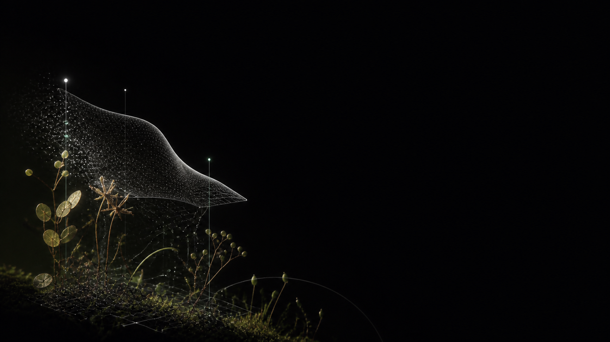
Primeiro encontramos o padrão que funciona: uma peça, um fluxo, um critério. Só depois ampliamos em formato, canal e volume.
LBA — primeiro o padrão. Depois a escala.
A direção humana define a intenção. O harness executa, versiona e devolve variações sem perder o DNA da marca.
LBA — produzir é transformar
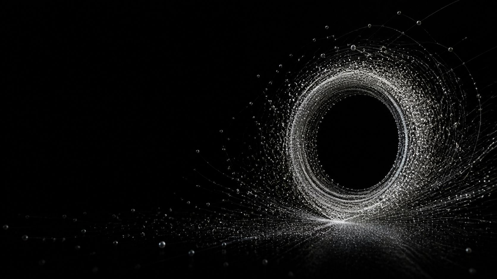
OPERON
Estrutura para a empresa operar com mais clareza, consistência e poder de decisão.
Capacidade para operar além de você.
A LBA soma como parceira de infraestrutura criativa quando essa frente faz parte do desafio.